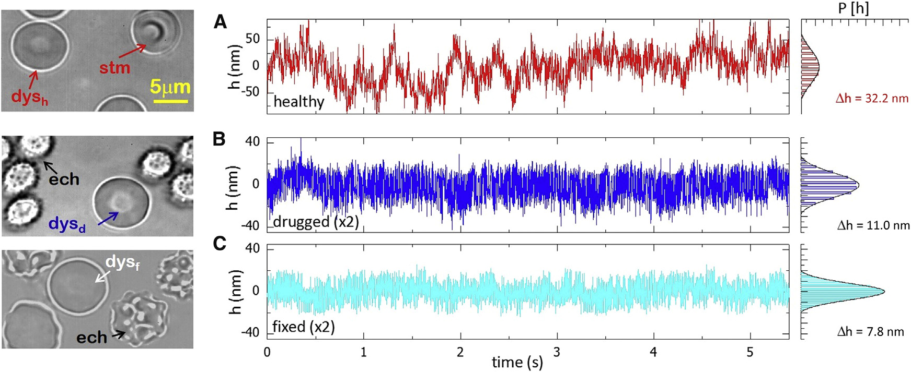
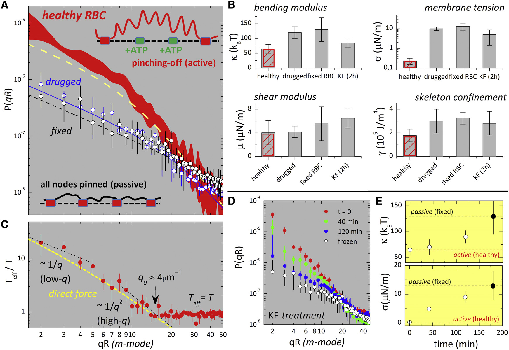
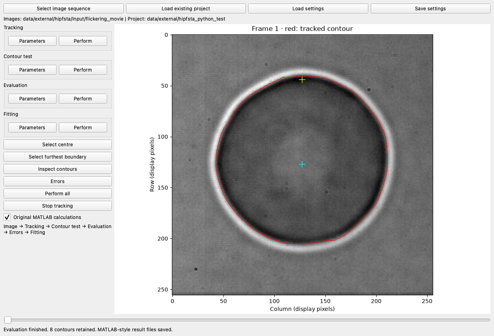

The scientific question
A membrane is constantly moving. In a microscope sequence, the edge of a vesicle or a red blood cell changes from frame to frame. Measuring that motion helps us study how the membrane bends and how its surroundings affect it.
The first challenge is to locate the same physical boundary consistently. A bright or dark band spans several pixels; choosing a different part of that band can create apparent motion that comes from the measurement rather than the membrane.
This software follows the image intensity around the membrane, saves a contour for each frame, checks those contours, and prepares them for fluctuation analysis. Reliable outlines are the starting point; extracting physical properties also requires the later analysis, calibration, and fitting stages.
The research behind the software
This project comes from my membrane research, including work on vesicle fluctuations and red blood cells. Our 2009 paper examined a fluctuation spectrum with bending and coupled curvature–dilation contributions. Our 2015 red blood cell paper studied how cytoskeleton activity affects membrane fluctuations. These are collaborative research results; the papers credit the full author teams.


From images to checked contours
The Python desktop interface follows the original MATLAB workflow. Load a microscopy sequence, select the approximate centre and membrane boundary, run tracking, inspect the outlines, check contour quality, and evaluate the retained contours.
The tracker uses local intensity fits in four directions to estimate the membrane position. It advances around the boundary using the intensity slopes and previous direction, then checks whether the contour closes. Quality checks flag problems such as short contours, closure failures, and sharp direction changes.

In the current sample run, eight of ten contours were retained after checking. That small demonstration verifies the workflow on this sample; it does not establish accuracy across experiments or reproduce a published mechanical measurement.
A small piece of the implementation
Before walking around the membrane, the tracker searches for a starting point with a strong change in image intensity. A local straight-line fit estimates that change. This helper in the Python translation performs the fit:
def linear_fit(x, y):
return np.linalg.lstsq(
np.column_stack([x, np.ones(len(x))]),
y,
rcond=None,
)[0]The returned slope is used when comparing candidate positions. The complete tracker also handles direction changes, boundary limits, and closure checks. Read the Python tracker alongside the original MATLAB tracker.
The translation keeps the original coordinate conventions and records differences in its README. Some changes prevent invalid image indexing; evaluation also provides a legacy option for comparison with the original calculations. A working translation still needs numerical comparison with trusted original results.
What is available today?
MATLAB: the original suite is available, including its GUI, contour tracking, checking, evaluation, and fitting code. The archive also contains different error-analysis scripts, which need careful review when choosing a reference workflow.
Python: the desktop interface, contour tracking, checking, and evaluation are available as an ongoing port. A fitting implementation exists in the code, but the complete error-analysis and fitting path for newly tracked sequences is not yet finished or validated against the original research results.
The next step is to establish the trusted MATLAB error-analysis path, compare its saved outputs, and then verify the Python fitting procedure. For now, the portfolio demonstration stops at contour detection and evaluation.
For me, the contour is the link between the image and the later physical interpretation. A convincing outline is useful, but it is only the start: the port still needs agreement with the original numerical analysis before I can use it to report membrane properties. The original research predates ChatGPT—these membranes were already fluctuating while we were still debugging MATLAB ourselves.
Papers and source code
- Original MATLAB suite.
- Python port, setup instructions, and current limitations.
- Rodríguez-García et al. (2009), Bimodal Spectrum for the Curvature Fluctuations of Bilayer Vesicles: Pure Bending plus Hybrid Curvature-Dilation Modes, Physical Review Letters 102, 128101.
- Rodríguez-García et al. (2015), Direct Cytoskeleton Forces Cause Membrane Softening in Red Blood Cells, Biophysical Journal 108, 2794–2806.
- Pécréaux et al. (2004), Refined contour analysis of giant unilamellar vesicles. A methodological reference by another research team.